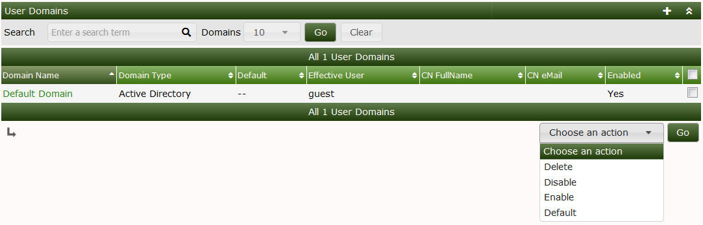
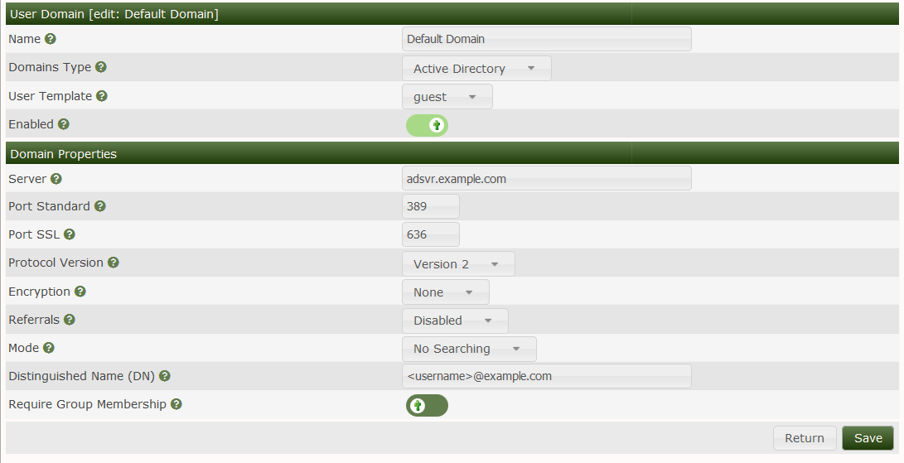
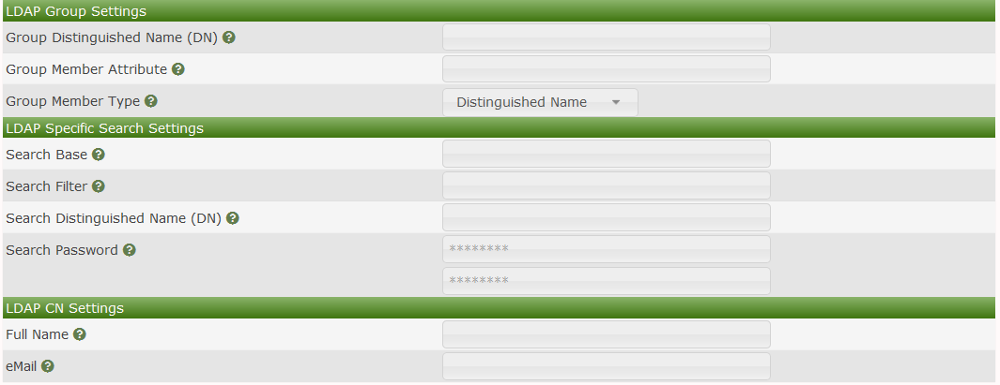

User Domains in Cacti are a way of providing Custom Login experiences to differing groups of users and using LDAP or Active Directory Group Permissions to limit who can login using those customer permissions.
Once a user login in for the first time, their permissions will enherit the Template accounts permission settings including User Group's and their permissions.
So, as the name implies, you can have from one to many LDAP and Active directory listings in the Domains plugin.
A use example would be for example 3 levels of customers who will have access to the system. For example lets say those three groups are:
Each of these users groups are controlled by Active Directory there are AD User Groups that map one-to-one with these Groups. When you have these three Domains setup and enabled, when you goto the Cacti Login screen there will be a drop-down settings with the three Domains listed in the drop-down.
If a normal user tries logging as an Administrator, their login will be blocked and so on.
The first image shows the list of domains, which domain is primary, and the actions you can take on a Domain.

In this second screen, you can see the User Domain login screen where you can pick AD or LDAP, the credentials, importantly the Template User Account (That which holds base permissions), and the require group membership, which when you check it, you can then specify the AD and LDAP User Group paths.

In the last images, you can see the Group Settings information, and if you have the users Full Name and Email stored in LDAP or AD, you can pull that information and make it a part of the Cacti wrapper account when it's first created.

Copyright (c) 2004-2024 The Cacti Group